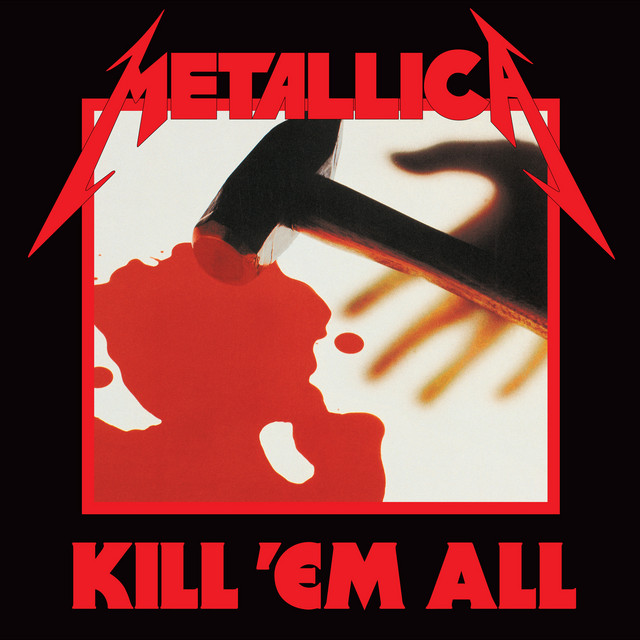

Kill 'Em All
1983
A **Kill 'Em All** 1983-ban jelent meg, és az egyik legfontosabb mérföldkő a thrash metal történetében. Az album gyors, agresszív gitár riffekkel és szikár dobjátékokkal ötvözi a klasszikus heavy metal elemeket, de az új irányvonalat a gyors tempó és a technikai precizitás hozta el. A lemez sötét, erőszakos témákat érint, miközben az önállóság, a küzdelem és a szabadság eszméit is képviseli.
A zenekar – James Hetfield (ének, gitár), Lars Ulrich (dobok), Dave Mustaine (gitár) és Cliff Burton (basszusgitár) – egyesítette fiatal energiáját és technikai tudását, hogy egy olyan albumot alkosson, amely örökre meghatározta a thrash metal világát. A Metallica nyers erejét és dinamikáját a **Kill 'Em All** hangzása tökéletesen tükrözi, és ez az album alapot adott az egész műfaj további fejlődéséhez.
A **Kill 'Em All** nem csupán egy stúdióalbum, hanem egy forradalmi lépés a metal zenében, amely hatással volt számos későbbi zenekarra és művészre, akik a műfaj határain belül dolgoztak.